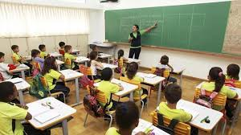

O 4º Objetivo de Desenvolvimento Sustentável (ODS) da ONU tem por objetivo "Assegurar a educação inclusiva e
equitativa e de qualidade, e promover oportunidades de aprendizagem ao longo da vida para todas e todos",
até 2030. Mas para que isso ocorra de forma mundial e todos possam ter os benefícios do novo projeto é necessário que
novas pessoas se interessem e participem dos cursos exigidos pelo currículo escolar e assim poderem passar seus
conhecimentos para novas pessoas (alunos).
Para que a educação também possa alavancar e poder alcançar o objetivo da ONU, é necessário que todos os pais
ensine e despertem o interesse de seus filhos, desde mais novos, as coisas mais simples e educativas da escola,
pois assim eles terão um maior interesse desde pequenos e isso permanecerá até a velhice.
É necessário também um maior interesse dos governantes, das autoridades legais, de toda a equipe gestora, e
principalmente dos alunos e pais, pois de nada adianta todos se esforçarem e não houver interesse de todos eles.
Os governantes tem de investir e ter mais atenção em todas as escolas e faculdades, sejam elas públicas
ou particulares! Bolsistas de instituições particulares necessitam ter mais oportunidades de trabalho para poderem
pagar seus cursos caríssimos, onde também as entidades devem ter "piedade" de seus alunos, pois os cursos são caros.
Para que realmente a "Educação de Qualidade" possa acontecer nas faculdades é necessário um empenho maior de toda
a equipe educacional da instituição, pois muitos cursos são caros e não oferecem as vantagens como é exigido no
diploma curricular. Depois de concluído o curso, TODOS devem ter novas oportunidades de empregos nas entidades
escolares, para poderem repassar todos os seus conhecimentos.
Para que a educação seja de qualidade, é necessário empenho de todas as partes, governos, escolas, pais
e alunos. Sem isso nada adianta investir, pois não terá bons resultados. TODOS DEVEM se interessar, para que a
Educação de Qualidade aconteça para todos e assim ter ótimos resultados para todos os países.!
Para que a educação possa ter bons resultados é necessário ele estar matriculado em uma boa escola, ter bons resultados e ter muitos amigos sempre, valores como esses são os princípios para todo estudante de qualquer idade ajudar a educação melhorar sempre!
Da mesma forma que muitos alunos são interessados em coisas da Internet, podem também ter seus interesses em aplicativos/sites escolares, para assim fazerem seus conhecimentos crescerem e cada vez mais saberem e ficarem atualizados de todos os temas mundiais que a escola exige!
Também os estudantes podem sempre revisar seu conteúdo estudado na escola, em suas casas, isso ajuda muito e faz com que nosso cérebro fixe ainda mais o novo conteúdo passado pelos professores. Fazer isso faz com que a escola tenha ótimos resultados e uma boa visão para todos da sociedade!
Fazendo tudo isso citado logo acima, e muito mais, você pode ter certeza que seu resultado no presente e futuro será ótimo e ninguém poderá tomar de você seu conhecimentos. Além disso, vai ajudar todos, pois a meta da ONU será alcançada e vai gerar um futuro ótimo para todos os cidadões de nosso mundo!
Ser estudante é ótimo, mas temos de enfrentar sempre muitos desafios
A gente deve sempre prestar atenção em cada assunto que o professor explica
Faça e aprenda tudo da maneira certa e você terá seu sucesso garantido
FELIPE TOLEDO DE ALMEIDA
Nasci no dia 10/06/2003, em Trindade - GO, atualmente tenho 17 anos, estou no 3º Ano do Ensino Médio, estou pensando em me formar para Ciências Contábeis, uma profissão que acho adequada com meu perfil de pessoa. Aos 15 anos tive a honra de participar de um evento simbólico dirigido pela Secretaria de Estado da Educação de Goiás, a Comenda Professor Nion Albernaz. Tenho facilidade em contas e vontade de aprender de tudo um pouco!